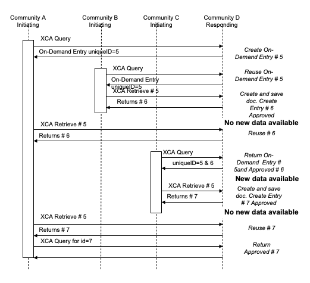

18 Cross-Community Access (XCA)
The Cross-Community Access Profile supports the means to query and retrieve patient relevant medical data held by other communities. A community is defined as a coupling of facilities/enterprises that have agreed to work together using a common set of policies for the purpose of sharing clinical information via an established mechanism. Facilities/enterprises may host any type of healthcare application such as EHR, PHR, etc. A community is identifiable by a globally unique id called the homeCommunityId. Membership of a facility/enterprise in one community does not preclude it from being a member in another community. Such communities may be XDS Affinity Domains which define document sharing using the XDS Profile or any other communities, no matter what their internal sharing structure.
This Profile has been updated by theXCA Deferred Response Option, and Asynchronous AS4 Option Supplement.
18.1 XCA Actors/Transactions
Figure 18.1-1 shows the actors directly involved in the XCA Integration Profile and the relevant transactions between them.
Note: The Document Consumer is shown in Figure 18.1-1 to clarify the responsibility of the XDS Affinity Domain Option discussed in Section 18.2.
Figure 18.1-1: XCA Actor Diagram
Table 18.1-1 lists the transactions for each actor directly involved in the XCA Profile. In order to claim support of this Integration Profile, an implementation must perform the required transactions (labeled “R”). Transactions labeled “O” are optional. A complete list of options defined by this Integration Profile and that implementations may choose to support is listed in Section 18.2.
Table 18.1-1: XCA Integration Profile - Actors and Transactions
| Actors | Transactions | Optionality | Section |
| Initiating Gateway | Cross Gateway Query [ITI-38] | R | ITI TF-2: 3.38 |
| Cross Gateway Retrieve [ITI-39] | R | ITI TF-2: 3.39 | |
| Registry Stored Query [ITI-18] | O | ITI TF-2: 3.18 | |
| Retrieve Document Set [ITI-43] | O | ITI TF-2: 3.43 | |
| Responding Gateway | Cross Gateway Query [ITI-38] | R | ITI TF-2: 3.38 |
| Cross Gateway Retrieve [ITI-39] | R | ITI TF-2: 3.39 |
Note: When an Initiating or Responding Gateway is grouped with a Document Consumer, there are additional requirements. See Section 18.2.3 for a description of grouping.
18.1.1 XCA Required Groupings
An actor from this profile (Column 1) shall implement all of the required transactions and/or content modules in this profile in addition to all of the requirements for the grouped actor (Column 2).
Table 18.1.1-1: XCA - Required Actor Groupings
| XCA Actor | Actor(s) to be grouped with | Reference |
| Initiating Gateway | CT / Time Client | ITI TF-1: 7.1 |
| ATNA / Secure Node or Secure Application | ITI TF-1: 9.1 | |
| Responding Gateway | CT / Time Client | ITI TF-1: 7.1 |
| ATNA / Secure Node or Secure Application | ITI TF-1: 9.1 |
18.2 XCA Actor Options
Options that may be selected for this Integration Profile are listed in the Table 18.2-1 along with the Actors to which they apply. Dependencies between options when applicable are specified in notes.
Table 18.2-1: XCA Integration Profile - Actors and Options
| Actor | Options | Vol. & Section |
| Initiating Gateway | XDS Affinity Domain | ITI TF-1: 18.2.1 |
| Asynchronous Web Services Exchange | ITI TF-1: 18.2.2 | |
| On-Demand Documents | ITI TF-1: 18.2.4 | |
| Responding Gateway | On-Demand Documents | ITI TF-1: 18.2.4 |
| Persistence of Retrieved Documents | ITI TF-1: 18.2.5 |
18.2.1 XDS Affinity Domain Option
Initiating Gateways which support the XDS Affinity Domain Option interact with Document Consumers within the XDS Affinity Domain served by the Initiating Gateway.
Initiating Gateway Actors which support this option:
- shall receive Registry Stored Query [ITI-18] transactions from a local Document Consumer and act on those requests on behalf of the Document Consumer. When receiving a Registry Stored Query from a local Document Consumer, shall require the homeCommunityId as an input parameter on relevant queries, and shall specify the homeCommunityId attribute within its Registry Stored Query responses. See Section 18.3.2 for description of homeCommunityId. Initiating Gateways which support this option shall adjust the patient identifier found in the Registry Stored Query to an appropriate patient identifier known to the Responding Gateway receiving the Cross Gateway Query. See ITI TF-2: 3.18.4.1.3 for details of the processing of the patient identifier.
- shall receive Retrieve Document Set [ITI-43] transactions from a local Document Consumer and act on those requests on behalf of the Document Consumer. When receiving a Retrieve Document Set from a local Document Consumer, shall require the homeCommunityId as an input parameter.
When an Initiating Gateway does not support the XDS Affinity Domain Option it is expected to be using non-IHE specified interactions to communicate remote community data to systems within its local community. These proprietary interactions are not further described within any IHE profile.
See the relevant transactions for further details regarding the homeCommunityId attribute.
18.2.2 Asynchronous Web Services Exchange Option
Initiating Gateways which support Asynchronous Web Services Exchange shall support Asynchronous Web Services Exchange on the Cross Gateway Query [ITI-38] and Cross Gateway Retrieve [ITI-39] transactions. If the Initiating Gateway supports both the XDS Affinity Domain Option and the Asynchronous Web Services Option it shall support Asynchronous Web Services Exchange on the Registry Stored Query [ITI-18] and Retrieve Document Set [ITI-43] transactions.
18.2.3 Grouping Rules
Grouping with a Document Consumer is used in situations where an Initiating Gateway and/or Responding Gateway are supporting an XDS Affinity Domain
When an Initiating Gateway is supporting an XDS Affinity Domain, it can choose to query and retrieve from local actors in addition to remote communities. This is accomplished by grouping the Initiating Gateway with a Document Consumer Actor. This grouping allows Document Consumers such as EHR/PHR/etc. systems to query the Initiating Gateway to retrieve document information and content from both the local XDS Affinity Domain as well as remote communities. For details see Section 18.2.3.1. An Initiating Gateway that is not grouped with a Document Consumer is only able to return results from remote communities, so local EHR/PHR/etc. systems (Document Consumer Actors) must direct separate query and document retrieve transactions internally and externally.
When a Responding Gateway is supporting an XDS Affinity Domain, it may resolve Cross Gateway Query and Cross Gateway Retrieve Transactions by grouping with a Document Consumer and using the Registry Stored Query and Retrieve Document Set transactions. For details see Section 18.2.3.2
18.2.3.1 Initiating Gateway grouped with Document Consumer
Initiating Gateways that are grouped with a Document Consumer:
- shall support the XDS Affinity Domain Option
- shall initiate Registry Stored Query [ITI-18] transactions to a local Document Registry to query local information in response to a received Registry Stored Query [ITI-18] from a local Document Consumer.
- shall initiate Retrieve Document Set [ITI-43] transactions to a local Document Repository in response to a received Retrieve Document Set from a local Document Consumer which contains a homeCommunityID indicating the local community.
Figure 18.2.3.1-1: Initiating Gateway grouped with Document Consumer
18.2.3.2 Responding Gateway grouped with Document Consumer
Responding Gateways that are grouped with a Document Consumer:
- shall initiate a Registry Stored Query [ITI-18] transaction to a local Document Registry to query local information in response to a received Cross Gateway Query [ITI-38]. The Document Registry response must be augmented with the homeCommunityId of the Responding Gateway’s community prior to returning in the response to the Cross Gateway Query.
- shall initiate a Retrieve Document Set [ITI-43] transaction to a local Document Repository to retrieve local information in response to a Cross Gateway Retrieve [ITI-39].
When a Responding Gateway is not grouped with a Document Consumer it is expected to be using non-IHE specified interactions to collect local information in response to a Cross Gateway Query or Cross Gateway Retrieve. These proprietary interactions are not further described within any IHE profile.
Figure 18.2.3.2-1: Responding Gateway grouped with Document Consumer
18.2.4 On-Demand Documents Option
Initiating and Responding Gateways may declare support for On-Demand Document Entries. Refer to Section 10.4.11.2 for details about On-Demand Document Entries.
Requirements for an Initiating Gateway supporting this option differ depending on whether or not the Initiating Gateway also supports the XDS Affinity Domain Option:
- An Initiating Gateway that supports the XDS Affinity Domain Option relies on an XDS Document Consumer in its local community to generate query and retrieve requests which support On-Demand Document Entries. The Initiating Gateway does not modify content related to On-Demand Entries, but passes it in the Cross-Gateway Query and Retrieve messages to the Responding Gateway and returns full results to the Document Consumer. For this reason, this option imposes no additional requirements on Initiating Gateways which support the XDS Affinity Domain Option.
- An Initiating Gateway that supports the On-Demand Documents Option, but not the XDS Affinity Domain Option, shall:
- be able to specify, in a Cross Gateway Query, a request for On-Demand Document Entries
- be able to retrieve On-Demand Document Entries from one or more Responding Gateways
Requirements for a Responding Gateway supporting this option differ depending on whether or not the Responding Gateway is grouped with an XDS Document Consumer:
- A Responding Gateway grouped with an XDS Document Consumer to interact with XDS Document Registry and Repository Actors is dependent on that grouped actor to support the semantics needed for On-Demand Documents. The Responding Gateway does not modify On-Demand Document Entries obtained from the XDS Document Consumer and passes them within the Cross-Gateway Query and Retrieve response messages returned to the Initiating Gateway. For this reason, this option imposes no additional requirements on Initiating Gateways that group with an XDS Document Consumer.
- A Responding Gateways that is not grouped with an XDS Document Consumer shall:
- be able to respond with On-Demand Document Entries to a Cross Gateway Query requesting On-Demand Document Entries. Without this option, a Responding Gateway shall ignore the request for On-Demand Document Entries (i.e., return an empty list if no other type of entry matches the query parameters).
- be able to respond to a Cross Gateway Retrieve requesting On-Demand Document Entries.
18.2.5 Persistence of Retrieved Documents Option
Responding Gateways which support the Persistence of Retrieved Documents Option shall:
- also support the On-Demand Documents Option
- make available, as a Stable Document Entry in response to a Cross Gateway Query, every document created as a result of receipt of a Cross Gateway Retrieve which specified the uniqueID of an On-Demand Document Entry
See Section 18.3.3.2 for an overview of this.
18.3 XCA Process Flow
18.3.1 Use Cases
Assume within a given domain, such as the State of California, we have several healthcare communities (or XDS Affinity Domains or RHIOs). One in Los Angeles is based on the XDS Profile. One in Sacramento is based on another form of healthcare sharing infrastructure. One in San Francisco is also based on the XDS Profile. A patient X, who travels frequently, has received healthcare in each of these communities. Patient X is admitted to a hospital in LA. The attending physician uses his hospital information system to query across multiple domains for healthcare information about this patient. Once found, references to patient data outside the local domain are cached locally for easy future reference.
18.3.2 homeCommunityId defined
This profile makes use of a homeCommunityId value which is a globally unique identifier for a community and is used to obtain the Web Services endpoint of services that provide access to data in that community. Specifically:
- It is returned within the response to Cross Gateway Query and Registry Stored Query transactions to indicate the association of a response element with a community. Document Consumers process the value in the response as an opaque unique identifier.
- It is an optional parameter to Registry Stored Query requests, not requiring a patient id parameter, and Retrieve Document Set requests to indicate which community to direct the request.
- It is used by Initiating Gateways to direct requests to the community where the initial data originated.
18.3.3 Detailed Interactions
The following diagram presents a high-level view of the interactions between actors when both initiating and responding communities are XDS Affinity Domains i.e., use of the XDS Affinity Domain Option and the Initiating Gateway and Responding Gateway are each grouped with a Document Consumer. Details on each interaction follow the diagram.
Figure 18.3.3-1: XCA Detailed Interactions
- Document Consumer initiates a Registry Stored Query request by patient id – the Document Consumer initiates the initial transaction by formatting a Registry Stored Query request by patient identifier. The consumer uses PDQ, PIX or some other means to identify the XDS Affinity Domain patient id, formats that information plus any other query parameters into a Registry Stored Query request and sends this request to an Initiating Gateway.
- Initiating Gateway processes Registry Stored Query by patient id request – The Initiating Gateway receives a Registry Stored Query by patient id and must determine a) which Responding Gateways this request should be sent to b) what patient id to use in the Cross Gateway Queries. Detailed specification of these steps is not in the intended scope of this profile. Combination of this profile with other existing profiles (e.g., PIX/PDQ), future profiles or configuration mechanisms is possible. Please refer to ITI TF-1: E.10 XCA and Patient Identification Management for possible use of existing profiles PIX and PDQ. For each Responding Gateway identified, the Initiating Gateway shall update the query with the correct patient identifier corresponding to the Responding Gateway’s community and initiates a Cross Gateway Query transaction to the Responding Gateway. If the Initiating Gateway is grouped with a Document Consumer it shall also initiate a Registry Stored Query to the local Document Registry.
- Responding Gateway processes Cross Gateway Query by patient id – The Responding Gateway within an XDS Affinity Domain processes the Cross Gateway Query by using grouping as a Document Consumer and initiates a Registry Stored Query to the local Document Registry. The Responding Gateway shall update the response from the Document Registry to ensure that the homeCommunityId is specified on every applicable element. This updated response is sent as the response to the Cross Gateway Query.
- Initiating Gateway processes Cross Gateway Query by patient id responses – The Initiating Gateway collects the responses from all Responding Gateways it contacted. For each response it shall verify homeCommunityId is present in each appropriate element. If the Initiating Gateway initiated a Registry Stored Query to the local Document Registry it shall update the response to that transaction to contain the homeCommunityId value associated with the local community. Once all responses are received the Initiating Gateway consolidates all updated response data into one response to the Document Consumer. The Initiating Gateway shall return to the Document Consumer the same homeCommunityId attribute values that it received from Responding Gateways.
- Document Consumer receives Registry Stored Query by patient id response – The Document Consumer receives the results of the query from the Initiating Gateway and must account for two unique aspects of the response; namely that a) the homeCommunityId attribute will be specified and b) the Document Consumer may not be able to map the repository id value directly to the Document Repository. There shall be a common coding/vocabulary scheme used across all communities. For example, all communities shall have common privacy consent vocabularies. The Document Consumer shall retain the values of the homeCommunityId attribute for future interaction with the Initiating Gateway.
- Document Consumer initiates a Registry Stored Query by UUID – Many Registry Stored Queries do not include patient id as a parameter, but instead require one of the entryUUID or uniqueID parameters, generically referred to as UUID. Both of these values are returned as part of the metadata from a query by patient id. The Document Consumer may do a patient id query to the Initiating Gateway prior to a query by UUID or shall have access to the correct homeCommunityId through some other means. In either case the consumer has the homeCommunityId attribute and shall specify it as a parameter of the query. The Document Consumer puts the homeCommunityId and UUID values plus any other query parameters into a Registry Stored Query request and sends this request to an Initiating Gateway.
- Initiating Gateway processes Registry Stored Query by UUID request – The Initiating Gateway receives a Registry Stored Query by UUID and determines which Responding Gateway to contact by using the homeCommunityId to obtain the Web Services endpoint of the Responding Gateway. The process of obtaining the Web Services endpoint is not further specified in this profile. If the homeCommunityId represents the local community the Initiating Gateway will initiate a Registry Stored Query to the local Document Registry. The Initiating Gateway shall specify the homeCommunityId in the Cross Gateway Query by UUID which is associated with the Responding Gateway.
- Responding Gateway processes Cross Gateway Query by UUID – The Responding Gateway within an XDS Affinity Domain processes the Cross Gateway Query by grouping as a Document Consumer and initiating a Registry Stored Query to the local Document Registry. The response to the Cross Gateway query shall contain the homeCommunityId of the responding community. This processing is identical to processing of the Cross Gateway Query by patient id.
- Initiating Gateway receives Cross Gateway Query by UUID response – The processing of a Cross Gateway Query by UUID response is identical to the processing of a Cross Gateway Query by patient id response, except there is only one response, so consolidation of responses is not needed.
- Document Consumer receives Registry Stored Query by UUID response – The processing of a Registry Stored Query by UUID response is identical to the processing of a Registry Stored Query by patient id response.
- Document Consumer initiates a Retrieve Document Set – Prior to issuing a Retrieve Document Set the Document Consumer may issue a Registry Stored Query by patient id to the Initiating Gateway. The response to the Registry Stored Query by patient id or subsequent Registry Stored Query by UUID includes a) the document unique ID b) the repository unique ID c) the homeCommunityId attribute. If the Document Consumer did not issue a Registry Stored Query which returned this information then it shall have acquired the information through some other means. The Document Consumer shall specify these three parameters in its Retrieve Document Set transaction to the Initiating Gateway.
- Initiating Gateway processes Retrieve Document Set – The Initiating Gateway determines which Responding Gateways to contact by using the homeCommunityId to obtain the Web Services endpoint of the Responding Gateway. If the homeCommunityId represents the local community the Initiating Gateway will initiate a Retrieve Document Set to a local Document Repository. The Retrieve Document Set may contain more than one unique homeCommunityId so the Initiating Gateway shall be capable of initiating requests to more than one Responding Gateway and consolidating the results. The Initiating Gateway shall specify the homeCommunityId in the Cross Gateway Retrieve which identifies the community associated with the Responding Gateway.
- Responding Gateway processes Cross Gateway Retrieve – The Responding Gateway within an XDS Affinity Domain processes the Cross Gateway Retrieve by grouping as a Document Consumer and initiating a Retrieve Document Set transaction to the Document Repository identified by the repository unique ID within the request. If the Cross Gateway Retrieve requests multiple documents with different repository unique IDs, the Responding Gateway shall contact multiple Document Repositories and consolidate the responses.
18.3.3.1 Sharing using On-Demand Documents
Figure 18.3.3-2 shows the use of an On-Demand Document Entry to allow access to the most recently available set of data from a responding community. This example does not show the Gateways interacting with XDS Actors and does not assume that XDS is used in any of the communities. This workflow includes persisting each document returned as a result of a retrieve and forming a stable document entry describing the new document which will be returned to future Cross Gateway Query requests. The semantics of the response to a retrieve of an On-Demand Document Entry are different than the semantics of the response to retrieval of stable documents. The response to a retrieve of an On-Demand Document Entry contains a new uniqueId, different than the uniqueId specified in the request, which is the same as the value within the ClinicalDocument id of the document returned. Use of an appropriate query against that new uniqueId will allow the requestor access to updated metadata about the document, including size, hash, etc. This workflow assumes that some change to the underlying data occurs between the time Community A retrieves on-demand document entry #5, and Community C retrieves on-demand document entry #5. That is why #6 is not re-used in response to Community C’s request.
Figure 18.3.3-2: Dynamically created content with persistence
Note: Figure 18.3.3-2 is a diagram of a possible interaction, not the required interaction. In particular, the ability of the Responding Gateway to determine whether there is new data available or not is an implementation detail. In the case where a Responding Gateway is able to make that determination it should work as presented. If the Responding Gateway is not able to make that determination then it is free to create a new document at every retrieve request.
18.4 XCA Security Considerations
18.4.1 XCA Risk Assessment
The risk analysis for XCA enumerates assets, threats, and mitigations. The complete risk data is stored and maintained in a central location. The complete risk data is stored and may be found in the IHE Google Drive at: XCARiskAnalysis.xls.
The purpose of this risk assessment is to notify vendors of some of the risks that they are advised to consider in implementing XCA actors. For general IHE risks and threats please see ITI TF-1: Appendix L . The vendor is also advised that many risks cannot be mitigated by the IHE profile and instead the responsibility for mitigation is transferred to the vendor, and occasionally to the XDS Affinity Domain and enterprises. In these instances, IHE fulfills its responsibility to notify affected parties through the following section.
18.4.2 Requirements/Recommendations
The following mitigations shall be implemented by all XCA actors. These mitigations moderate all high impact risks.
- M1: All actors in XCA shall be grouped with an ATNA Secure Node or Secure Application and a CT Time Client.
- M2: Document metadata shall include a SHA1 hash of the document content. Applications shall have the ability to verify the SHA1 hash of the document with the SHA1 hash in the metadata, if corruption detection is requested.
- M3: Document Consumer implementations shall handle overloading through excessive volume of response data by discontinuing the read on the socket and closing it. The Initiating and Responding Gateways shall respond to disconnection by discontinuing processing of responses.
- M4: Document Consumer implementations shall not issue a Registry Stored Query that is not patient specific, i.e., it shall either supply a patient identifier or a unique document entry identifier.
- M6: Queries of unknown patient identifiers shall return either zero documents with no further information or XDSUnknownPatientId, depending on local policy. This applies to patient identifiers that are properly formatted or improperly formatted. By not using an error code indicating that the identifier is ill formatted, you are able to reduce the ability of applications to fish for data. This applies only to Responding Gateways, if appropriate.
The following mitigations address the risk of a document being maliciously changed. This mitigation is optional.
- M5 : Documents may be digitally signed using the DSG Profile
The following mitigations are transferred to the vendors, XDS Affinity Domains, and enterprises.
- T1: Backup systems for registry metadata, repository documents, and gateway configuration are recommended.
- T2 : All implementations are recommended to ensure that all received data is propagated appropriately (i.e., without corruption and complete results) or an error is presented.
- T3 : Network protection services are recommended to be sufficient to guard against denial of service attacks on all service interfaces.
- T4 : A process that reviews audit records and acts on inappropriate actions is recommended.
- T5 : It is recommended that service interfaces be implemented with a good design to guard against corruption and denial of service attacks
18.4.3 Policy Choices
Policy choices will not be addressed by this profile. Each community may have different policies. The profile has been designed with this fact in mind and an understanding of enough variety of policies so that any reasonable policy can be implemented without violating the profile.